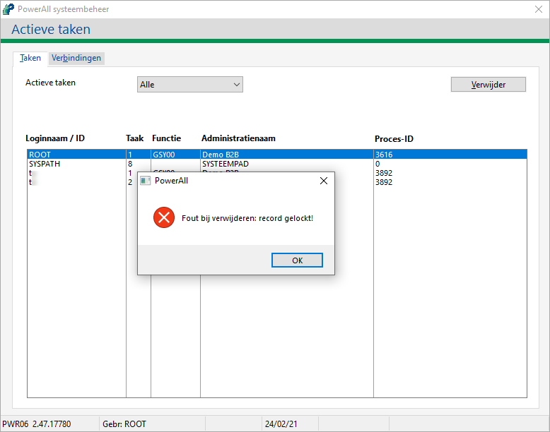
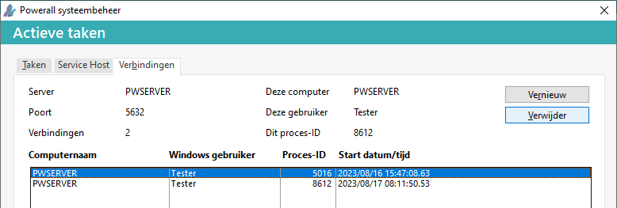
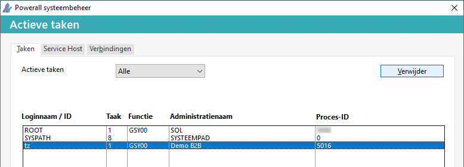

Om de verbinding of sessie met een (niet actieve) gebruiker te verbreken, doorloopt u de volgende stappen:
Ga in het systeemmenu naar Systeembeheer > Actieve taken.
De actieve gebruikers/taken worden weergegeven.
Selecteer de gebruiker.
Kies voor de knop Verwijderen.
Kies voor de knop Ja.
De betreffende taak van de gebruiker geannuleerd of beëindigd.
Opmerking: Het tabblad Verbindingen is alleen beschikbaar in de Thin-Client en niet bij de lokale runtime.
• De openstaande verbinding m.b.t. SYSPATH (Systeembeheer) kan niet verwijderd worden.
Op een werkstation lukt het vaak niet om een taak te deactiveren.
De melding Fout bij verwijderen: record gelockt verschijnt dan.

In dit geval was er nog een actieve verbinding.
Let op! Controleer altijd of de gebruiker nog actief / aan het werk is, anders kan er bijv. een boeking abnormaal beëindigd worden.
Om deze te verwijderen, doorloopt u de volgende stappen:
Ga naar tabblad Taken en controleer Proces-ID van de gebruiker, in de kolom PID.
Ga naar tabblad Verbindingen.
Opmerking: Controleer Gebruiker en/of Start datum/tijd.

NB In bovengenoemd geval was er de vorige dag niet goed uitgelogd, bij het afsluiten.
Zoek daar hetzelfde Proces-ID op.
Kies voor de knop Verwijderen.
De melding Aanvraag voor het verwijderen van de verbinding is verzonden! verschijnt.
Kies voor de knop OK.
Ga naar tabblad Taken.

Verwijder de taken met het zelfde Proces-ID één voor één.
Powerall Connect controleert stap 5 en 6 automatisch bij het inloggen.
De niet actieve taken zijn verwijderd.
Copyright ©
{kind=link}